; the spin sums ,
; the spin sums , Construction
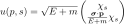
,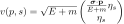
, normalised to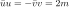
,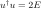
. Projectors: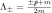
. Completeness: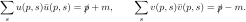
 matrices; check on the rest frame (
matrices; check on the rest frame (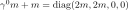
) and boost covariantly.Antiparticles
- Hole theory: all negative-energy states filled; a hole behaves as a particle of charge
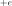
, energy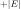
: the positron (Anderson 1932) (Dirac 1930; Anderson 1933). Pair creation = lifting an electron out of the sea. - Feynman–Stückelberg: a negative-energy solution moving backward in time equals a positive-energy antiparticle moving forward. This is built into the Feynman propagator and needs no sea.
- Charge conjugation:
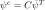
,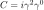
, maps solutions of charge to
to  .
.
Helicity
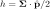
commutes with the free Hamiltonian; for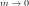
, chirality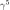
= helicity: right- and left-handed components decouple (neutrinos, chiral structure of weak interactions).Worked example
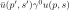
for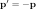
(backscattering), , same helicity: vanishes. Helicity conservation in vector couplings suppresses backward scattering in Mott scattering at high energy (factor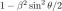
).Engineering applications
Positron emission tomography (annihilation photons), positron annihilation spectroscopy of vacancies in semiconductors, spin-polarised electron beams (helicity) for accelerators.
Pitfall
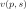
describes an antiparticle of momentum and opposite spin label; keep track when summing spins only through the completeness relations.
and opposite spin label; keep track when summing spins only through the completeness relations.